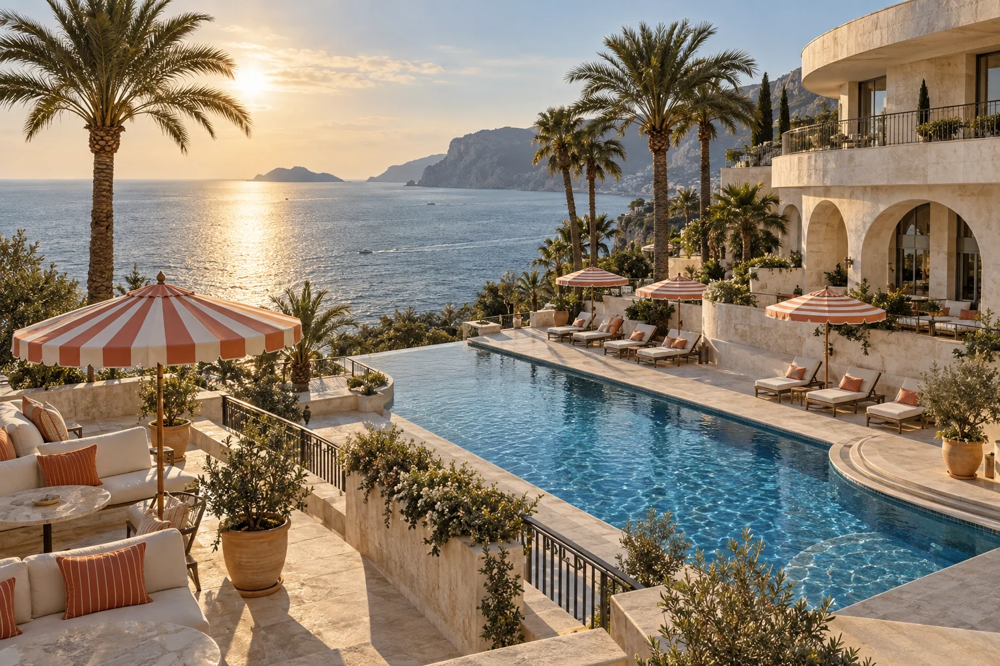
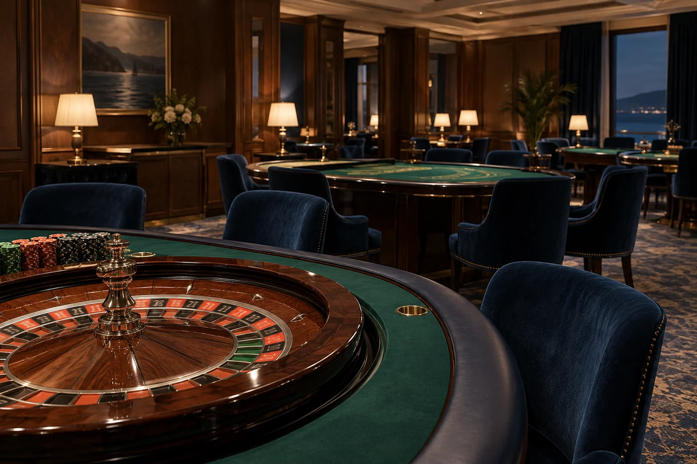
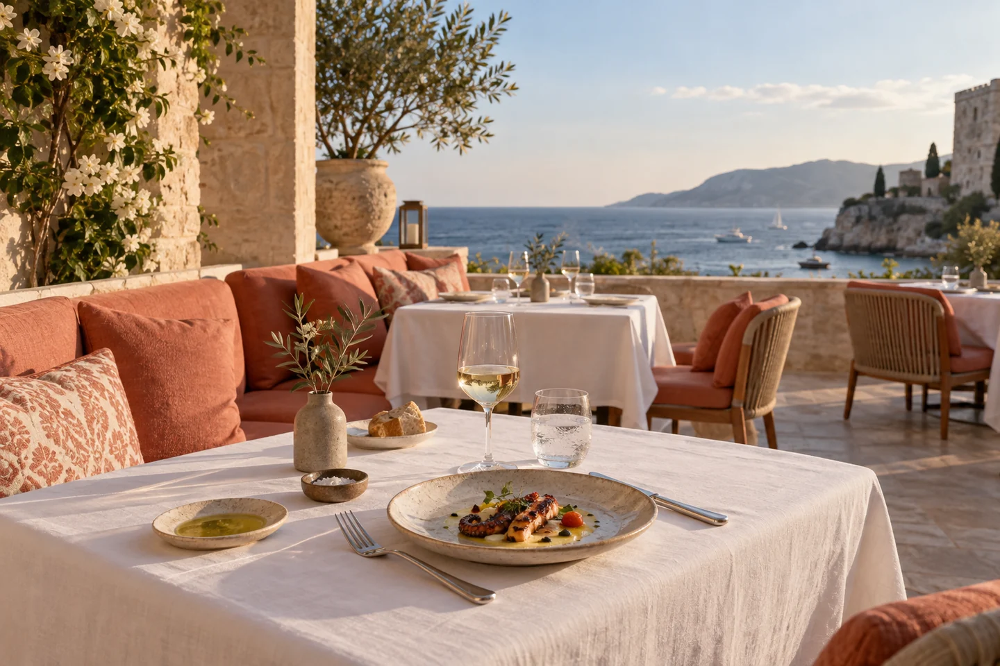
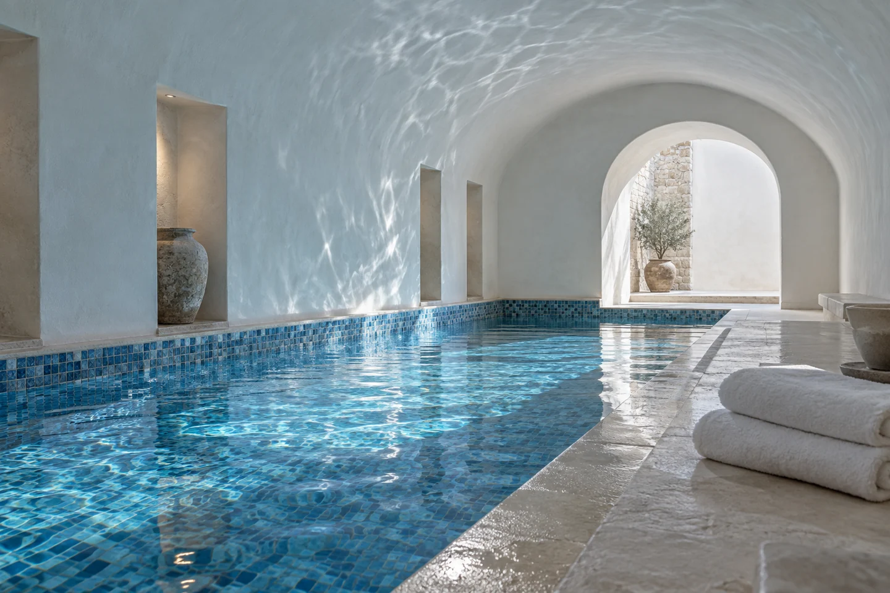
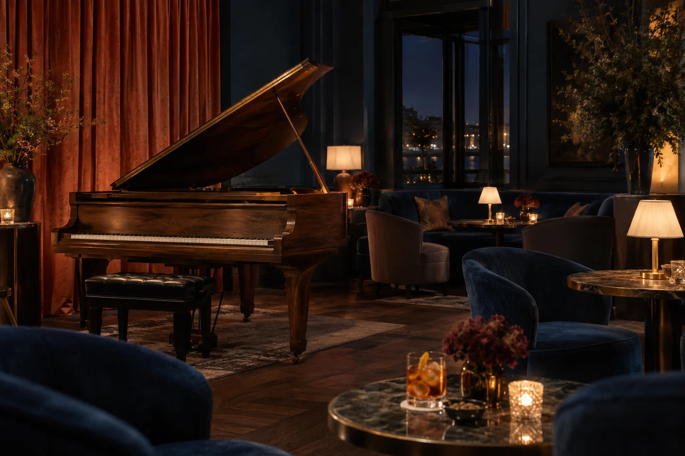

Sereva · Hotel & Casino
Somewhere between
daydream & after dark.
A slower morning. A table worth lingering at.
An evening with its own possibilities.
Make room for a little escape.
Tell us what you have in mind. Every stay begins with an enquiry.
The Sereva point of view
A change of scene.
A different state of mind.
There is a particular pleasure in a day without a timetable. A long breakfast. A shaded corner. Dinner that becomes a conversation you do not want to end.
Our Hotel & Casino concept brings those moments together: thoughtful rooms, a generous table and an evening world you can dip into, or simply pass by.
Discover the Sereva outlook01 / Make yourself at home
The room is only
the beginning.
Choose the feeling you would like to wake up to. Our room collection moves from a quietly considered retreat to space for a longer, more personal escape.
02 / When the mood changes
A little theatre.
A night of your own.
The casino is one part of the Sereva evening: a considered setting for adults who choose to play, with room to pause, watch and leave whenever they wish.

Hotel & Casino · The evening collectionThe gaming room
Green felt, soft lamps and comfortable space around the tables. Explore roulette, blackjack and baccarat in an atmosphere shaped as much by service as by the game.
The private salon
A quieter setting for conversation and an individually paced visit. Enquire about the salon concept, access arrangements and the information to review before playing.
Your own pace
Set a time and spending limit before entering. The lounge offers a natural change of scene, and an evening at Sereva never needs to include gambling.

03 / Come hungry, stay awhile
Good taste.
No hurry.
A seasonal dining room, a relaxed terrace table and a late-night lounge. Different settings, the same belief: the most memorable meals leave room for the people around the table.
Follow a crisp first course with something slowly cooked. Trade a formal dinner for small plates. Let the conversation set the pace.
Find your table04 / A gentler kind of occasion
Turn the volume
down.
Warm stone underfoot. Blue water catching the light. A quiet place to put your phone away and notice how little a good afternoon needs.
Explore our bathing, bodywork and rest concepts. Choose the parts that suit you, with time between appointments and space for doing nothing at all.
Take a slower path
05 / The salon
One more song.
One more conversation.
A piano in the corner, a low table lamp, a seat that invites you to stay. The salon connects dinner and the gaming room while keeping its own easy, sociable character.

For listeners, conversationalists and anyone who prefers a quieter night.
Meet at the salon06 / Bring your people
A reason to gather.
A setting to remember.
An intimate celebration asks for a different kind of attention from a creative retreat. Start with the people, the mood and the meal; then shape the room around them.
Private dinners A thoughtfully paced menu and a table for conversation.
Small celebrations A personal occasion, without the unnecessary ceremony.
Creative gatherings Space to think together, followed by a change of scene.
A Sereva ritual
Leave a little
morning unplanned.
Open the curtains before opening your messages. Take coffee somewhere with a view. Read another chapter. The best part of a stay may be the hour you never thought to book.
The terrace table07 / An international outlook
Bring your curiosity.
We will start there.
Sereva is conceived for travellers from everywhere. No single destination has been announced; tell us where you would like this kind of escape to take you.
From a quiet waterside weekend to a longer cultural itinerary, your interests can shape the first conversation. Practical location and arrival details must be confirmed before any travel is arranged.
Explore the possibilitiesA few details, a whole feeling
The Sereva notebook.
Explore the textures and imagined spaces behind the concept.
{kind=link}
{kind=link}
{kind=link}
A considered approach
Play is a choice.
Wellbeing comes first.
Gambling should be a voluntary form of adult entertainment, never a way to earn money or recover a loss. It is entirely possible to enjoy Sereva without taking part.
Decide your limits
Set a time limit and an amount you can afford to lose before playing. Keep money for everyday needs separate. Stop at your limit and avoid chasing losses.
Give yourself a break
Step away regularly. If gambling stops feeling comfortable or becomes difficult to control, stop and speak to someone you trust.
Ask about exclusion
Before visiting any venue, ask about its available self-exclusion arrangements and support process. Local entry and eligibility requirements must be checked with the venue.
Independent help
Gambling Therapy offers free global online support for people affected by gambling, including family and friends.
Visit Gambling TherapyYour next chapter
A stay starts with a conversation.
Share the dates, details and little things that would make an escape feel like yours. Our forms send an enquiry, never a confirmed booking.